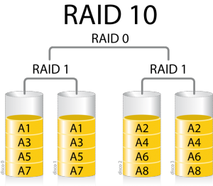
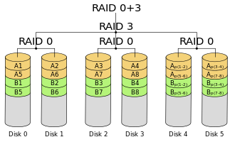
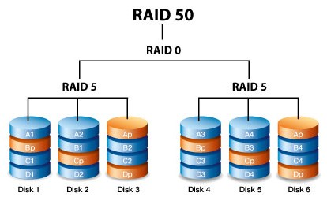
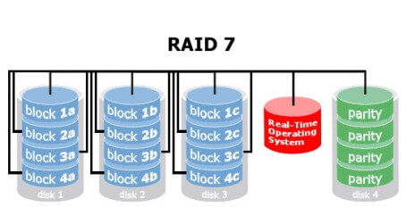

Комбинация от RAID (Хибридни)
RAID 1+0 (10)
Това ниво представлява комбинация от RAID 1 и RAID 0 – т.е. от data mirroring и data striping. В този случай блоковете от данни се записват огледално (информацията се дублира) и едновременно с това се разпределят между двойка дискове. Тук има по-голяма производителност и защита на данните от RAID 1, но цената му е много по-висока, заради необходимостта от минимум 4 диска. Масивът може да понесе множество загуби на устройства, стига едно огледално копие да не загуби всичките дискове.
RAID 0+1
Тук схемата на функциониране е обратна на 1+0. Първо информацията се разпределя последователно на блокове и след това те се дублират. Отново минималното изискване е 4 дискови устройства, което предопределя и високата цена. Рискът от загуба на информация е по-голям, отколкото при RAID 1+0.
RAID 0+3
Нивото обединява начинът на работа на RAID 0 и RAID 3. Използва се разделяне (striping) както при RAID 0, но при разпределение на блоковете по схемата на RAID 3. Така се увеличава надеждността на RAID 3, но респективно с това се повишава и цената.
RAID 5+0
Съчетание между разпределението на битовете за четност при RAID 5 със stiping-a на RAID 0. Подобрява се надеждността на RAID 5 без да се намалява защитата на данните.
RAID 7
Този RAID е запазена марка на Storage Computer Corporation. Показателите на максималния трансфер при четене на файлове, независимо малки или големи, е изключително висок. Начинът на работа обединява РАЙД 3 и РАЙД 4, но предлага много по-голяма производителност от тях. Той трудно се намира на пазара и държи висока цена.
